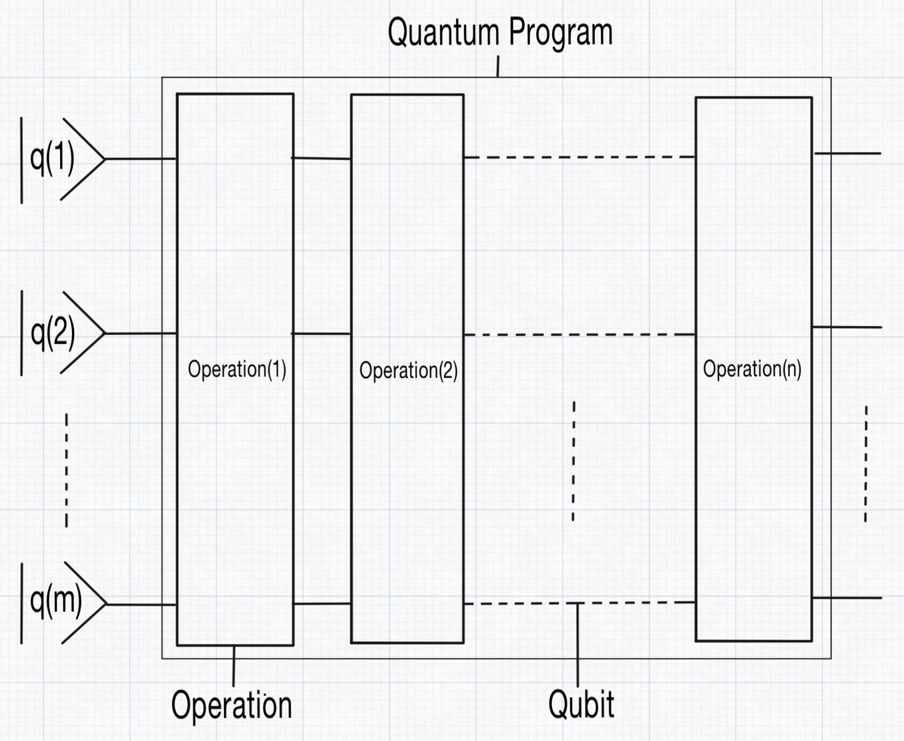
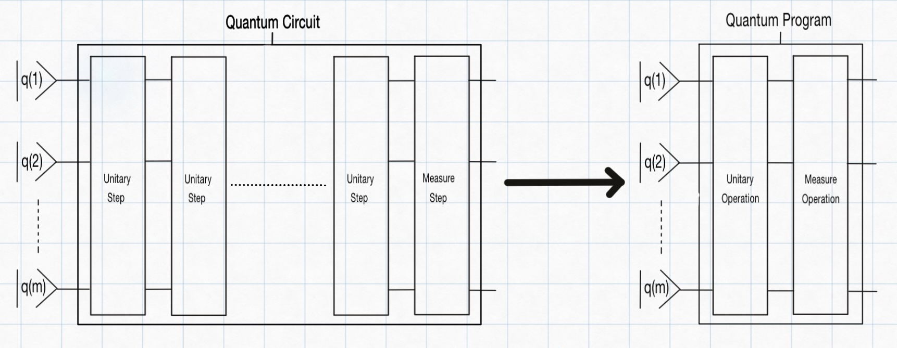

How you compile the quantum circuit into a quantum program
Given a QuantumCircuit, the compilation with compileQuantumCircuit converts each step in the circuit into a corresponding operation. This process is performed for every step, and the full sequence of these operations is called a QuantumProgram in QubiSim.

QubiSim supports four types of operations: UnitaryOperation, MeasureOperation, MeasureAndForgetOperation and QuantumChannelOperation. In steps with unitary gates, the compilation process constructs a single UnitaryOperation by taking the tensorProduct of the individual unitary matrices for each gate in that step.
QubiSim also offers an optimization feature: calling compileQuantumCircuit with the optimizeNumberOfSteps option set to true, consecutive steps containing only unitary gates can be merged (fused) into one operation. This combined operation is created by sequentially multiplying the unitary matrices, thereby reducing the number of operations in the final quantum program for potentially more efficient execution.

When a step includes measure gates, the compiler creates a MeasureOperation or MeasureAndForgetOperation (depending on whether the measurement outcome is revealed to the observer or not) that holds the KrausOperators. If the measurement outcome is revealed to the observer, the post-measurement state will be collapsed to one of the possible outcomes. If it is not revealed, the post-measurement state will be a mixed state over all possible outcomes. For a projective measurement (PVM), the compiler automatically generates the equivalent KrausOperators, effectively converting it into a generalized measurement (POVM). For a generalized measurement (POVM), the supplied KrausOperators are used directly.
In steps with a quantum channel gate, the compiler creates a QuantumChannelOperation that holds the KrausOperators.
QubiSim provides functions to create various operations:
Single-qubit operations:
createSingleQubitOperationU1,createSingleQubitOperationU2,createSingleQubitOperationU3,createSingleQubitOperationX,createSingleQubitOperationY,createSingleQubitOperationZ,createSingleQubitOperationH,createSingleQubitOperationId,createSingleQubitOperationRx,createSingleQubitOperationRy,createSingleQubitOperationRz,createSingleQubitOperationRotation,createNQubitOperationProjection,createSingleQubitOperationT,createSingleQubitOperationTd,createSingleQubitOperationS,createSingleQubitOperationSdDouble-qubit operations:
createDoubleQubitOperationCNOT,createDoubleQubitOperationCNOTReverse,createDoubleQubitOperationSWAP,createDoubleQubitOperationPhase,createDoubleQubitOperationControlledH,createDoubleQubitOperationControlledX,createDoubleQubitOperationControlledY,createDoubleQubitOperationControlledZ,createDoubleQubitOperationControlledT,createDoubleQubitOperationControlledTd,createDoubleQubitOperationControlledS,createDoubleQubitOperationControlledSdN-qubit operations:
unitaryUGate!,createNQubitOperationReflection,createNQubitOperationExpH,createNQubitOperationQFT,createNQubitOperationIQFT,createNQubitOperationControlledU,createNQubitOperationQPE
Use compileToSingleGate to compile a given quantum circuit (containing only UnitaryGates) into a single operation. Given a QuantumProgram, a specific operation can be retrieved with getOperation.